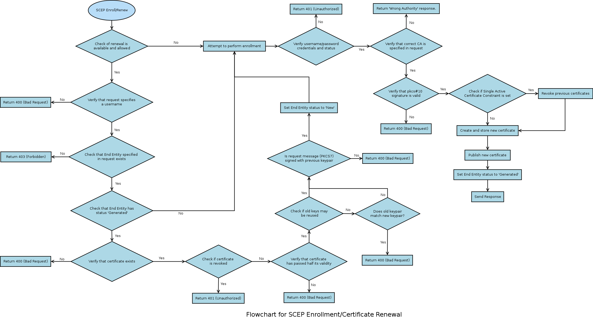
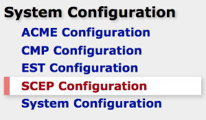
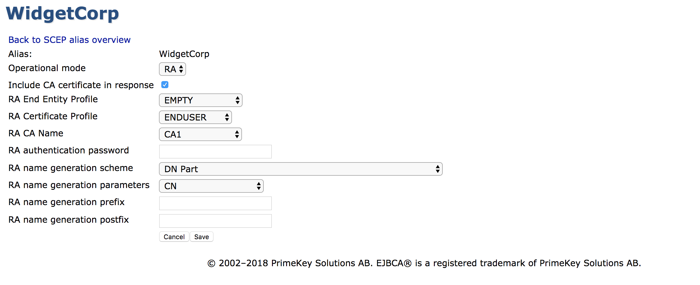

SCEP
Introduction
SCEP is a protocol commonly used by network equipment to enroll for certificates. It is also used by MdM and EMM solutions to enroll certificates on behalf of devices such as mobiles. SCEP is specified in the following draft by the Internet Engineering Task Force (IETF) Simple Certificate Enrollment Protocol (draft-nourse-scep-23).
There are some compatibility issues with SCEP, one being whether the CA certificate should be returned in an SCEP enrollment response or not. The CA certificate is optional, but some clients such as the Cisco VPN client to require it while others, such as Juniper's, prohibit it. EJBCA has this option configurable.
SCEP has in general use been supplanted by the similar EST protocol, which we would recommend as an alternative.
Supported Operations
EJBCA implements features as of (at least) draft 23 of the SCEP specification. The following SCEP messages are implemented:
PKCSReq including Client Certificate Renewal
GetCRL
GetCACert
GetCACertChain
GetCACaps
GetNextCACert
Complete Flowchart

Using the Legacy External RA API (not to be confused with the synchronous EJBCA RA using Peers), the additional SCEP message GetCertInitial is supported for polling mode:
The following CA capabilities are supported:
POSTPKIOperation
SHA-1
Client Certificate Renewal (Enterprise Edition only)
Note that EJBCA returns proper SCEP error messages for the majority of failures, but not in all cases of failure.
SCEP Configuration
The SCEP URL is http://HOST:PORT/ejbca/publicweb/apply/scep/ALIAS/pkiclient.exe.
The URL contains a reference to a configuration alias 'ALIAS'. 'ALIAS' is an alphanumeric string that refers to the set of SCEP configurations that should be used when handling the SCEP request coming through this URL. It is possible to configure as many configuration aliases as desired using the command line or the CA UI.
Creating a SCEP alias with the name scep makes it available using the default URL (the same URL as in previous versions), http://HOST:PORT/ejbca/publicweb/apply/scep/pkiclient.exe.
From the Command Line Interface
For information on creating and configuring the SCEP aliases using the command line, run the following command from the EJBCA home directory:
Creating a SCEP alias with the name scep makes it available using the default URL (the same URL as in previous versions), http://HOST:PORT/ejbca/publicweb/apply/scep/pkiclient.exe.
./bin/ejbca.sh config scepFrom the CA UI
Configure SCEP using the Admin GUI, under SCEP Configuration.

To be able to edit the SCEP configuration, you require /edit_systemconfiguration access.
Operational Modes
SCEP can be run in one of the following modes:
CA Mode
In CA mode, EJBCA receives SCEP PKCSReq requests and sends back the certifificate/CRL immediately in a proper SCEP reply message. The SCEP client will send messages directly to the CA, encrypted with the CAs certificate and the CA will authenticate/authorize the request based on username and enrollment code of an end entity pre-created in EJBCA. This mode does not support the 'polling' model, EJBCA uses the direct CA method, where a request is granted or denied immediately.

The CN part of the DN in the PKCS#10 request, which is part of the SCEP request, will be used as the 'username' when authenticating the request in EJBCA. Create the SCEP request with a CN matching the username registered in EJBCA. The challengePassword in the PKCS#10 request, which is part of the SCEP request, will be used as the 'password' when authenticating the request in EJBCA. Create the SCEP request with a challengePassword matching the password registered in EJBCA.
The most common errors are wrong username/password or wrong status (not NEW) on the user in EJBCA.
RA Mode
ENTERPRISE This is an EJBCA Enterprise feature.
In RA Mode, EJBCA receives SCEP PKCSReq requests when a user is to be created (or edited). A certificate is returned immediately in a proper SCEP reply message. The RA is authenticated/authorized based on configuration.

For this mode to work, the property <alias>.operationmode in the command line or 'Operational mode' in the AdminGUI has to be set to RA. All the parameters needed to create the new end entity should be set through the command line or the CA UI.
For information on configuring parameters using the command line, run the following command from the EJBCA home directory:
./bin/ejbca.sh config scep updatealias --helpValues
|
Value Name |
Description |
|
Include CA Certificate in Response |
Setting this value to true will cause the CA certificate to be included in the response, if applicable. |
|
Allow Client Certificate Renewal |
ENTERPRISE This is an EJBCA Enterprise feature. This setting activates Client Certificate Renewal, as defined in IETF: Simple Certificate Enrollment Protocol - Appendix D. In short, this mode allows the server to interpret enrollment requests as certificate renewal requests, only if the latest issued certificate for the end entity has passed half its validity. To be valid, the PKCS#7 wrapping the CSR must be signed by the old certificate's keypair. |
|
Allow Client Certificate Renewal using Old Key |
ENTERPRISE This is an EJBCA Enterprise feature. The SCEP draft does not mandate if old keys may be reused for Client Certificate Renewal or not, so EJBCA includes this as a setting. |
|
CA Certificate Rollover |
EJBCA supports creating a rollover certificate for a CA, and issuing certificates via SCEP with this new CA certificate. This is useful when changing the CA key during renewal. It is described in IETF: Simple Certificate Enrollment Protocol - Appendix E |
Proxying SCEP Through an RA
Proxying SCEP through an EJBCA RA Using Peers
<tbd>
The Legacy External RA SCEP Server
ENTERPRISE This is an EJBCA Enterprise feature.
This functionality is outdated and will not be supported further in the future. Instead we recommend proxying SCEP requests synchronously through an RA using Peers, as described above.
EJBCA supports the SCEP 'polling' RA model using the External RA API. Using this, a SCEP client can send a request to the External RA, and then wait, polling the RA for updates. When the request is processed by the CA, which fetches the pkcs10 request from the External RA, the certificate is sent back to the External RA. When the certificate is complete on the External RA, the RA sends back the SCEP certificate response the next time the SCEP client polls the RA. This feature is very useful to securely insulate the CA from the SCEP clients throughout the network.
Tested Devices
The following provides information on tested devices.
Cisco ISE
EJBCA SCEP, using RA mode, has been successfully integrated with Cisco ISE. Configuring EJBCA as a backend CA in Cisco ISE devices can be enrolled with certificates from EJBCA, through the ISE enrollment interfaces.
iPhone/iOS
You can enroll certificates for the iOS directly with EJBCA using SCEP. There is a detailed how-to that is available together with a support subscription. For more information, refer to www.primekey.com.
OpenSCEP
Note that OpenSCEP only supports OpenSSL 0.9.6. Additionally, there is a know limitation that causes it to crash when receiving SCEP responses.
To use the OpenSCEP client to request a certificate from this servlet, use the command:
./scep -k test.key -r test.pemreq -c ejbca-ca.pem -q foo123 -u http://localhost:8080/ejbca/publicweb/apply/scep/ALIAS/pkiclient.exeWhere test.key is generated with:
openssl genrsa -out test.keytest.req is generated with:
openssl req -key test.key -new -days 30 -out test.req -outform DER -config ../openssl/openscep.cnfand test.pemreq is generated with:
openssl req -key test.key -new -days 30 -out test.pemreq -outform PEM -config ../openssl/openscep.cnfSimple Scep Client (sscep)
Simple Scep Client. You should only use CN in the users DN (same as for PIX below).
jSCEP
jSCEP uses EJBCA as one of the servers it is tested against.
There is a CLI for jSCEP by Bruno Bonfils.
Test the CLI by creating a SCEP alias and issuing a SCEP request. For example:
$ cd ejbca$ cat > scepalias-camode.propertiesscep.operationmode = cauploaded.includeca = true $ bin/ejbca.sh config scep uploadfile --alias scep --file scepalias-camode.properties$ bin/ejbca.sh ra addendentity --username=user --password=foo123 --dn="CN=User Usersson" --caname=ManagementCA --type=1 --token=USERGENERATED$ cd ../jscep-cli-jdk6$ openssl genrsa -out test.key$ openssl req -key test.key -new -days 30 -out test.pemreq -outform PEM$ java -jar target/jscepcli-1.0-SNAPSHOT-exe.jar --ca-identifier ManagementCA --challenge foo123 --csr-file test.pemreq --dn "CN=user" --key-file test.key --url http://localhost:8080/ejbca/publicweb/apply/scep/pkiclient.exeMobileIron
EJBCA has been confirmed to work with MobileIron MDM system.
Mobile Iron always use the CA identifier 'MobileIronSCEP' in all SCEP request. SCEP request from MobileIron always start with "operation=GetCACaps&message=MobileIronSCEP". Therefore the CAs name have to be set to 'MobilIronSCEP' to make it work.
Beside that, RA and CA mode works perfectly with MobilIronMDM.
Juniper Networks NetScreen-25/NetScreen-50
Works well.
To enroll using the Juniper box go to the Web GUI at https://<juniper-ip>/, then click your way to Objects > Certificates. To create a new certificate request:
New - enter the DN that your box will receive:
Name=netscreen.foo.se
Organization=PrimeKey
Country=SE
IP Address=192.168.1.1
FQSN=netscreen.foo.se
Click generate.
Automatically enroll to > New CA Server settings. You have to configure if EJBCA should use the direct CA mode or the RA polling mode:
CGI URL: http://<ra-ip>:8080/scepraserver/scep/<config-alias>/pkiclient.exe
CA IDENT: The CA Name in EJBCA, for example ScepCA.
Challenge: A password for a pre-registered user in CA mode, or a random password used for polling RA mode.
Click OK.
You can now see the request in Objects > Certificates. If you are using polling RA mode, you can click 'Retrieve' after the request has been approved in the CA and the certificate has been generated.
Cryptlib
When using Cryptlib, the CA certificate must have KeyUsage 'Key Encipherment' in addition to the usual key usage flags. This is reasonable, since SCEP requires the CA to actually encrypt data (which generally is a bad thing, since a special encryption certificate should be used for that).
Key usage for an ScepCA should be: Certificate Sign, CRL Sign, Digital Signature, Key Encipherment
Use the complete path as for the Cisco VPN client below as server name.
Cisco VPN client
To enroll using the Cisco VPN client, use:
CA URL='http://127.0.0.1:8080/ejbca/publicweb/apply/scep/ALIAS/pkiclient.exe'
CA Domain=your CAs name in EJBCA
In the DN screen simply enter the username (as added in EJBCA) as 'Name \[CN\]'
When using an External RA to enroll with the Cisco VPN client, the RA certificate must have KeyUsage SigitalSignature and KeyEncipherment for the client to accept the CA certificates. However, to locate the RA encryption certificate, only KeyEncipherment can be set, which makes things quite complicated.
The conclusion is that RA enrollment does not work with Cisco VPN client.
AutoSscep
EJBCA has been tested successfully with AutoSscep for enrollment against the CA and the External RA SCEP service.
Instructions:
Download and build AutoSscep (make).
Create a configuration file, ejbca.conf, as the example below.
Create a user in EJBCA with username (common name) and DN exactly as entered in the configuration file.
run 'autosscep ejbca.conf'.
Sample configuration file, ejbca.conf:
Verbose = "yes"Debug = "no"CADir="/home/autosscep/"CertDir="/home/autosscep/"KeyDir="/home/autosscep/"[CA\]DN="C=SE, O=EJBCA Sample, CN=ManagementCA"URL="http://localhost:8080/ejbca/publicweb/apply/scep/pkiclient.exe"CertFile="ManagementCA.cacert.pem"EncCertFile="ManagementCA.cacert.pem"[/CA\][Certificate\]CertFile="mycert"KeyFile="mykey"CADN="C=SE, O=EJBCA Sample, CN=ManagementCA" # Create a user with username "router4711" and password "foo123" in EJBCA# to automatically enroll# Note you need to add a user with exactly these fields in the DN in EJBCAEmail = "mymail@mydomain"Country="SE"State="BS"Location="Stockholm"Organization="PrimeKey"CommonName="router4711"ChallengePassword="foo123"[/Certificate\]AutoSscep also handles enrolling against an RA, where the RA first sends a PENDING response which the request is being processed. After processing (by the CA) you simply run the AutoSscep client again to pick up the generated certificate.
In order to enroll against the External RA SCEP Server in EJBCA i only had to change the CA part of the configuration file to use the SCEP RA servers certificate for signing and encrypting the messages instead of the CAs, and to use the URL to the RA. The SCEP RA certificate is the end entity certificate issued to the External RA SCEP server (the keystore is usually called scepraserver.p12).
[CA\]DN="C=SE, O=EJBCA Sample, CN=ManagementCA"URL="http://localhost:8080/scepraserver/scep/pkiclient.exe"CertFile="scepra.pem"EncCertFile="scepra.pem"[/CA\]Cisco PIX/3000
Cisco PIX and Cisco 3000 is supported. The following description applies for PIX:
Configure JBoss to use port 80 to enroll with PIX:
APPSRV_HOME/server/default/deploy/jbossweb-tomcat50.sar/service.xml(or similar depending on version). You must run as root to use port 80.EJBCA supports the ca mode of enrollment for pix, not ra. For ra and polling enrollment, use the External RA API SCEP module.
The certificate profile used by the SCEP CA must include the key usages KeyEncipherment and DataEncipherment, otherwise PIX will not be able to verify/decrypt encrypted SCEP messages. This is not in the default certificate profile for CAs. Create a new certificate profile before creating the Scep CA, using ROOTCA as template for the new certificate profile.
When enrolling for certificate using SCEP, with for example a Cisco PIX, it is a ca_nickname. This nickname should be the CA-name as defined when creating the CA in EJBCA. For example vpnca.
Only use lower-case names when creating the CA in EJBCA, since PIX will change the CA name VpnCA to vpnca when enrolling.
The username in EJBCA must be the name the PIX identifies itself with name.domain, for example pix.primekey.com.
The end-entity DN must include the DN components CN and unstructuredName, ex "CN=pix.primekey.com, unstructuredName=pix.primekey.com". You can also include O, C etc in the certificate. A normal DN for a PIX is "CN=pix.primekey.com,unstructuredName=pix.primekey.com,O=PrimeKey,C=SE".
Certificates used for PIX MUST include the DN component unstructuredName (fqdn) and could also include unstructuredAddress (ip) being the IP-address of the PIX.
The certificate used on the Cisco PIX MUST have a SubjectAltName field dNSName, matching the DN component unstructuredName. This is needed in order for Cisco VPN clients to connect to the PIX. The DNS Name field is not necessary for the PIX to enroll perfectly with EJBCA, only for the client to be able to connect.
Certificates used for PIX may also use the SubjectAltName iPAddress matching the DN component unstructuredAddress, but it is not necessary.
Cisco does not support use of the Domain Component, DC, attribute in DNs, and it is recommended not to use the attribute.
KeyUsage should include Digital Signature and Key Encipherment, the EJBCA defaults work fine.
When the Cisco VPN-client (above) connects to the PIX, the ou part of the clients DN must match a Vpngroup you have specified, otherwise the connection will fail.
Cisco PIX (older) needs the SCEP response messages to use MD5 as hash algorithm, not SHA1, this is handled by EJBCA automatically.
Ensure that the PIX Firewall clock is set to GMT, month, day, and year before configuring CA. Otherwise, the CA may reject or allow certificates based on an incorrect timestamp. Cisco's PKI protocol uses the clock to make sure that a CRL is not expired. Set the timezone first, then set the time, then check the time using show clock.
The following displays examples of the enrollment steps:
-- Connect with pix and enter admin modetelnet 10.1.1.1 (default pwd cisco)enable (default blank pwd)configure terminal-- Enable CA loggingdebug crypto ca-- Clear current PKI configclear ca identity-- Enter PKI config, i.e location of CA etc. Don't require CRLs, it's easierca identity pixca ca-ip:/ejbca/publicweb/apply/scep/pkiclient.execa configure pixca ca 1 0 crloptionalca authenticate pixca-- wait ---- Look at the fetched certificateshow ca certificateca save allwr mem-- Get a CRL if you really want to (if you did not configure CRL as optional you must)ca crl request pixca-- wait --show ca crl-- Generate keys and enroll for the certificate (user in ejbca has password foo123)ca generate rsa key 1024ca enroll pixca foo123-- wait, wait, this will take a long time ---- Look at the fetched certificate, this should now show both the pix cert and the ca certshow ca certificatepix(config)# show ca certCertificate Status: Available Certificate Serial Number: 594f643a6916d78d Key Usage: General Purpose Subject Name: C = SE O = PrimeKey CN = pix.primekey.com UNSTRUCTURED NAME = pix.primekey.com UNSTRUCTURED IP = 10.1.1.1 Validity Date: start date: 14:42:29 GMT Sep 17 2005 end date: 14:52:29 GMT Sep 17 2007CA Certificate Status: Available Certificate Serial Number: 7c7cf75236955a51 Key Usage: General Purpose C = SE O = PrimeKey CN = pixca Validity Date: start date: 15:59:20 GMT Sep 16 2005 end date: 16:09:20 GMT Sep 14 201